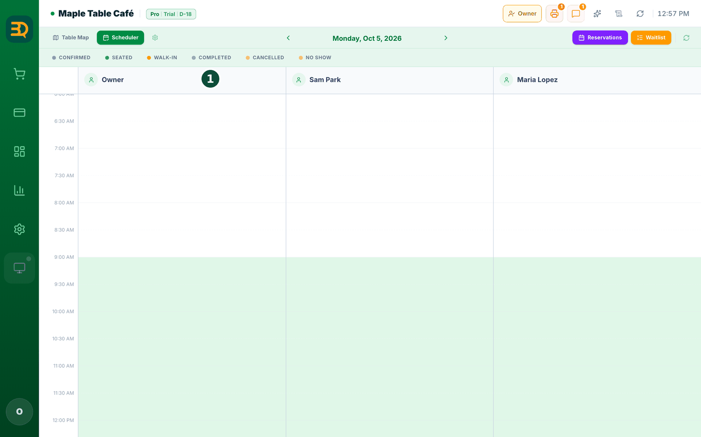
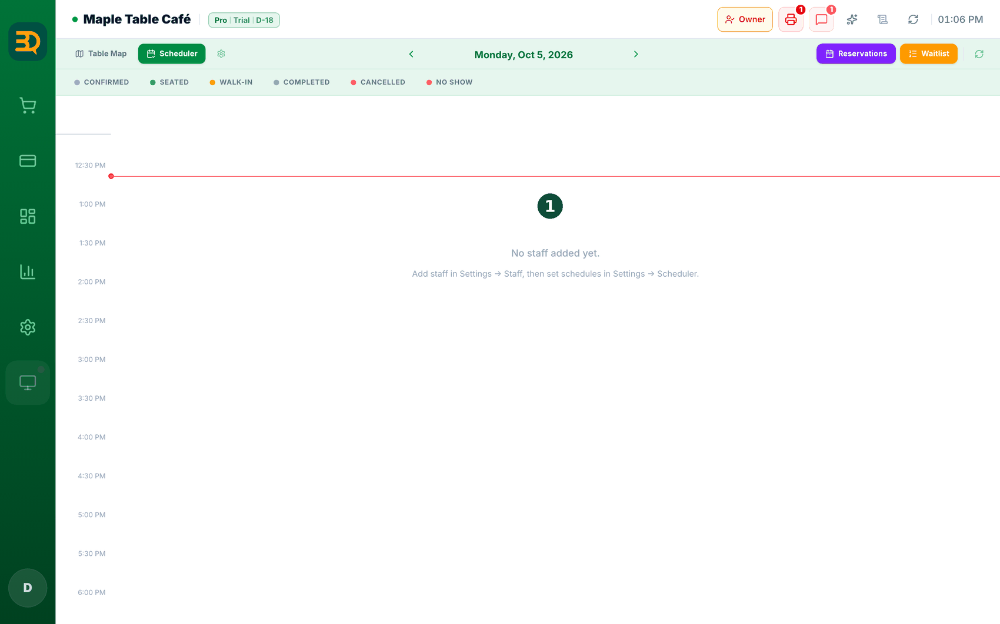
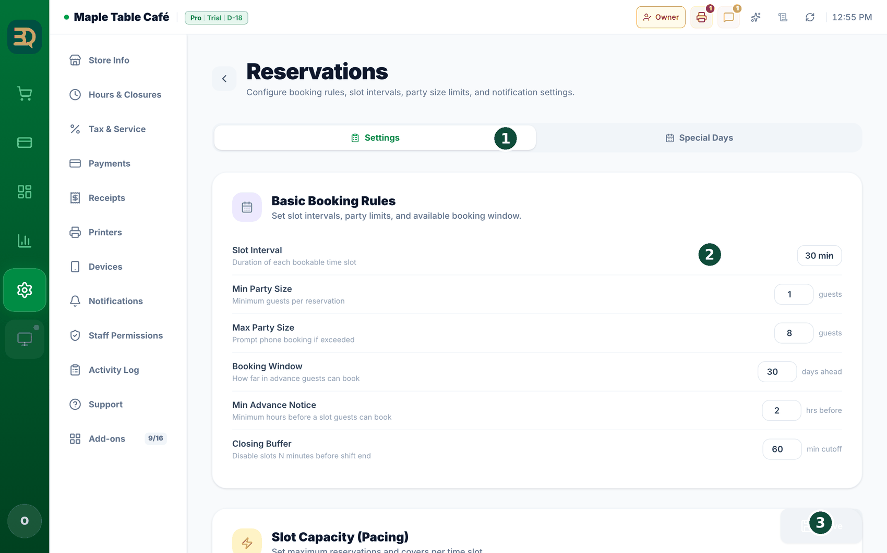
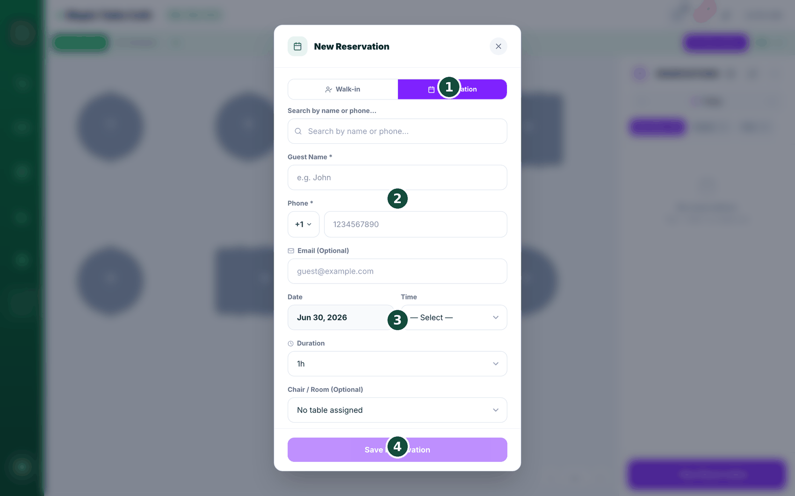
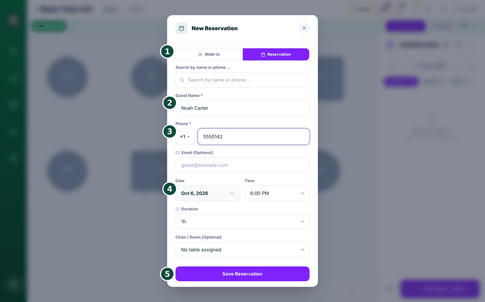
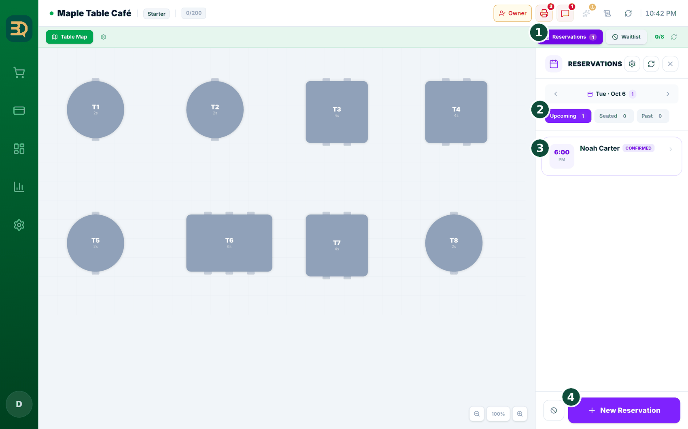
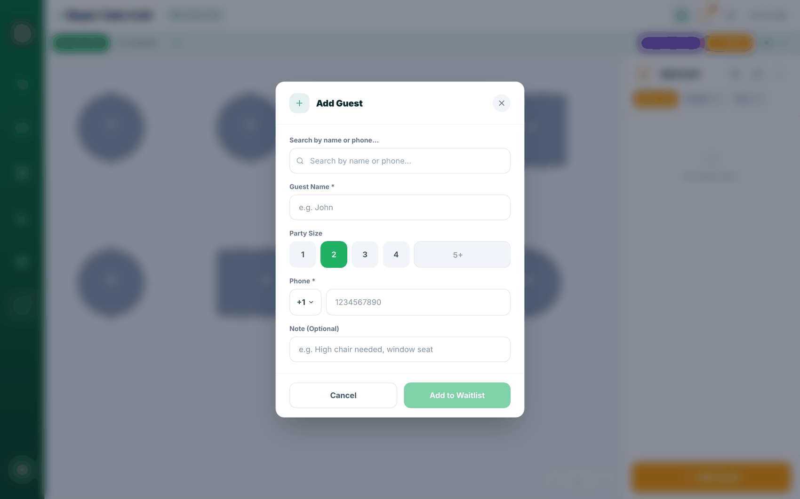

16Reservas y agenda
Una reserva es cuando un cliente aparta una mesa o un horario antes de venir. Puede tener todas sus reservas en un solo lugar. Agreguemos una.
Active Reservations en Settings › Add-ons › Reservations (accione el interruptor). Primero necesita Tables (Mesas) activado; si Tables está desactivado, una ventana ofrece "Enable Both": tóquelo. Las citas de salones y spas (por miembro del personal y horario) usan el complemento Scheduler (Programador), en el mismo lugar; es un complemento Pro.
Antes de empezar: configure su horario de atención en Settings › Hours & Closures. Las reservas solo ofrecen horarios dentro de sus turnos abiertos, así que si no aparece un horario, revise primero su horario.




- Abra la página de reservas. Desde el Table Map (Mapa de Mesas), toque Reservations (arriba a la derecha), o abra la pestaña Scheduler (Programador) de arriba. (La pestaña Scheduler solo aparece en el plan Pro con el complemento Scheduler activado).
- Toque el día que quiere en el calendario.
- Toque New Reservation (Nueva reservación). Se abre un formulario.

- Complete Guest Name (Nombre del cliente), Phone (ambos obligatorios), Date (Fecha) y Time (Hora). Email (Correo) es opcional y Duration (Duración) empieza en 1 hora. En las tiendas con mesas, como restaurantes y cafeterías, también elige el número de Guests (de 1 a 4, o escriba 5 o más). Las tiendas de tipo salón o spa no tienen campo de número de personas.
- Opcional: elija una Table (o una Chair / Room en salones y spas) y un miembro del Staff (Personal), y agregue una Note (Nota). En un salón o spa, elegir al miembro del personal es lo principal. El campo Staff solo aparece cuando se ha agregado al menos un miembro del personal.
- Toque Save (Guardar). El cliente recibe automáticamente una confirmación de que tiene su reserva, por correo, SMS o WhatsApp, según lo que haya configurado.

- Cuando llega un cliente con reserva, abra su tarjeta de reserva y toque Check In. Pasa a Seated (y le asigna una mesa si hace falta).
- ¿Llega alguien sin reserva? Toque la opción Walk-in (Sin cita): sienta al cliente de inmediato.
Settings › Reservations › Settings, en Booking Policy & Guest Portal. Entonces, como dice la descripción: "closing the day automatically marks any still-Confirmed reservations from that day as No-Show, and sends each guest a notice email explaining why.". Está desactivado hasta que lo active. Solo se modifican las reservas que siguen en Confirmed (Confirmada); las sentadas, completadas y canceladas quedan exactamente como están, y volver a cerrar el mismo día no envía correos dos veces.El correo al cliente es objetivo, no un regaño: el asunto es "We couldn't confirm your visit", dice que se reservó la mesa pero no se pudo confirmar la llegada, y lo invita a contactarlo si es un error.
Las reservas vienen incluidas. No necesita una segunda app ni pagar un extra. Los restaurantes reservan mesas; los salones y spas reservan el tiempo del personal, todo en el mismo calendario.
Lista de espera
Una lista de espera es la fila de clientes que esperan una mesa libre. BrewDesk lleva la fila por usted y envía un mensaje al cliente en cuanto su mesa está lista, para que no se amontonen en la puerta.
Actívela en Settings › Add-ons › Waitlist (accione el interruptor). Primero necesita Tables (Mesas) activado; toque Enable Both (Activar ambos) si aparece la pregunta.

- Abra la Waitlist (Lista de espera). Desde el Table Map (Mapa de Mesas), toque Waitlist (arriba a la derecha).
- Toque Add Guest (Agregar cliente). Se abre un formulario pequeño.
- Ingrese el Name (Nombre) del cliente, el Party size (cuántas personas) y el Phone (para poder enviarle un mensaje). Agregue una nota si quiere y guarde.
- Cuando se libere una mesa, busque a ese cliente y toque Notify (Notificar). Recibe un mensaje de "su mesa está lista" (SMS o WhatsApp).
- Luego siéntelo, y listo.
Settings › Store info, así que no hay nada adicional que subir. El campo de teléfono también se abre con el código telefónico de su país (+1, +82, +66…), tomado del país de su tienda, así que los clientes solo escriben su número.Temas relacionados
¿Necesita más ayuda?
Puede enviar un ticket de soporte desde la app en Settings › Support.